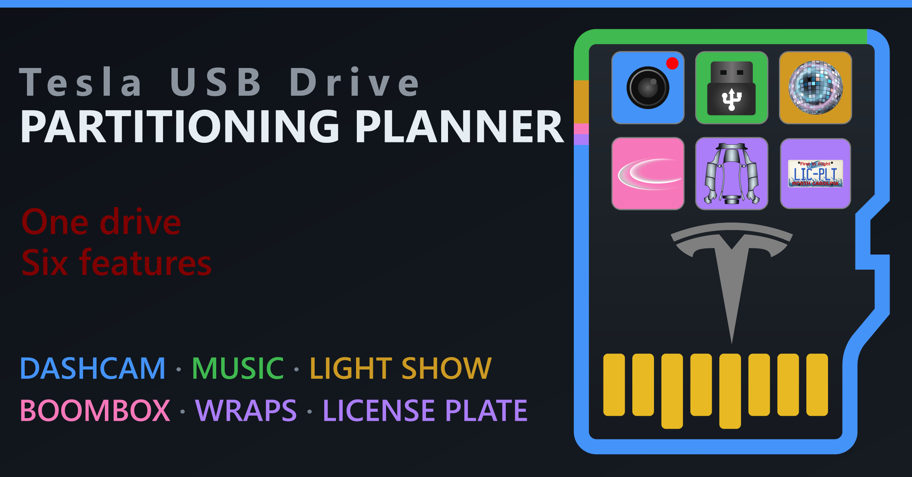

This is a companion tool for the Tesla USB Drive Partitioning Guide. Start by entering the size of your physical USB drive. Then choose, group, and configure your desired features and partitions. Next, verify the partitioning plan, along with the folders and file requirements for each feature. Finally, follow the tailored graphical or command line instructions to implement that plan.
Last verified: September 2026
Select the advertised capacity of your external SSD or microSD card. This will be used to calculate the usable capacity of your drive. Both values can be entered manually as well.
The features, partitions, and settings below reflect the plan from this guide's example — the default grouping, volume labels, sizes, and allocation units all come from its Partitioning Plan table.
A partition's border turns red when Tesla documents its features as incompatible, amber when the pairing is disputed or undocumented, and blue when only the community reports it working. Scroll to the warnings below the partitions and the guide's Feature Compatibility table for more details.
The following summarize the settings from the previous steps, adding the folders required for each feature, and the file requirements for the content.